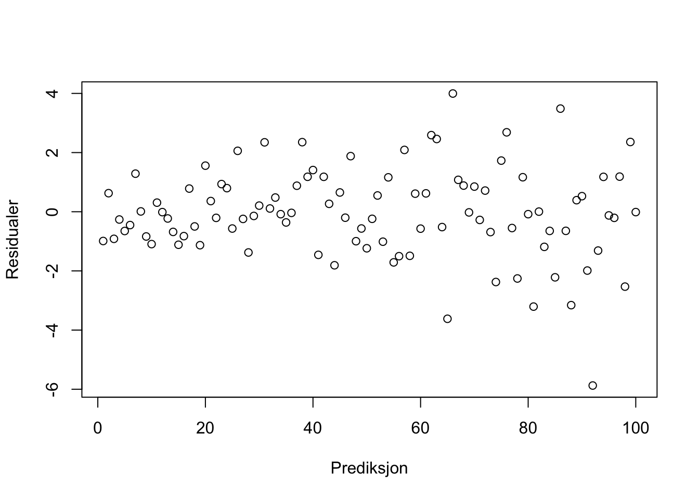
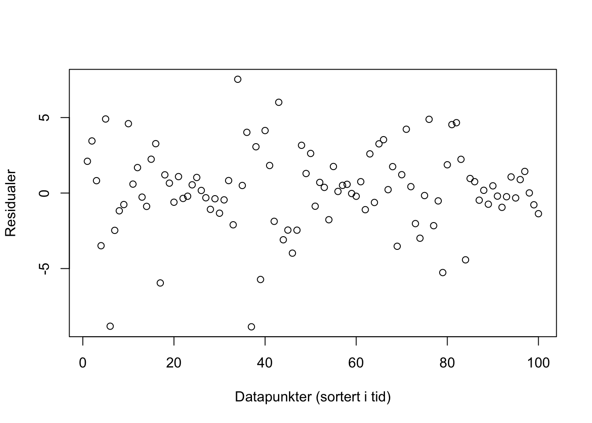
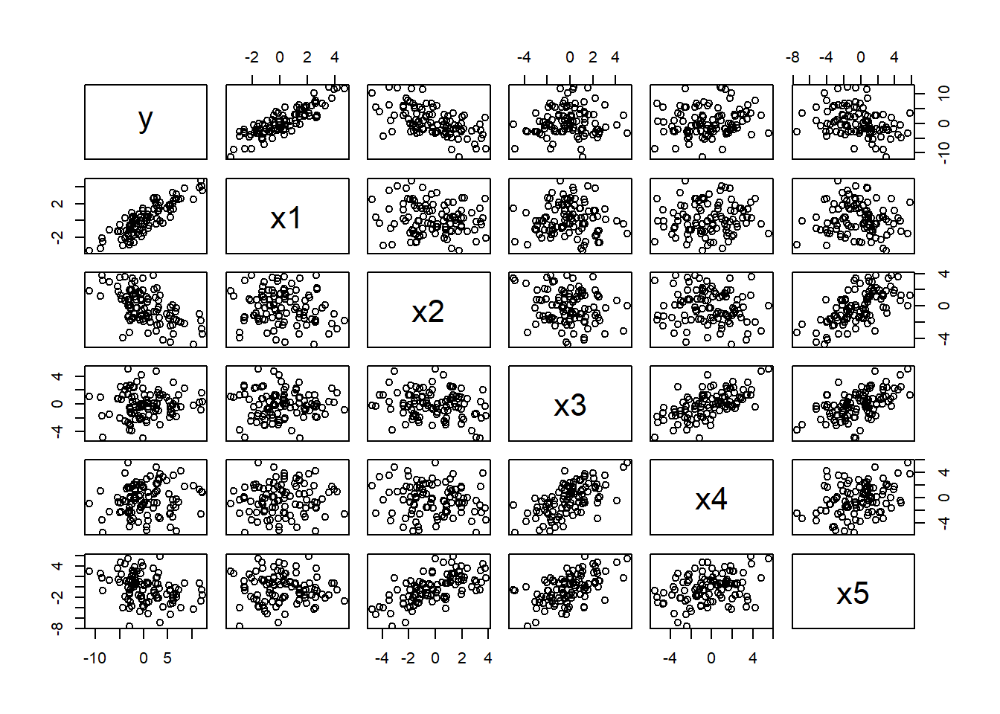
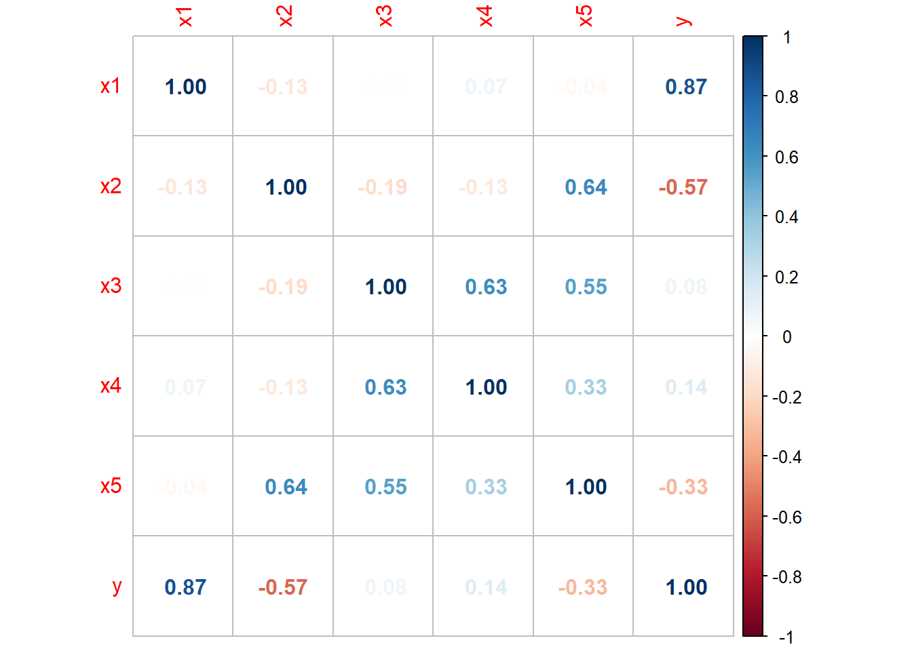
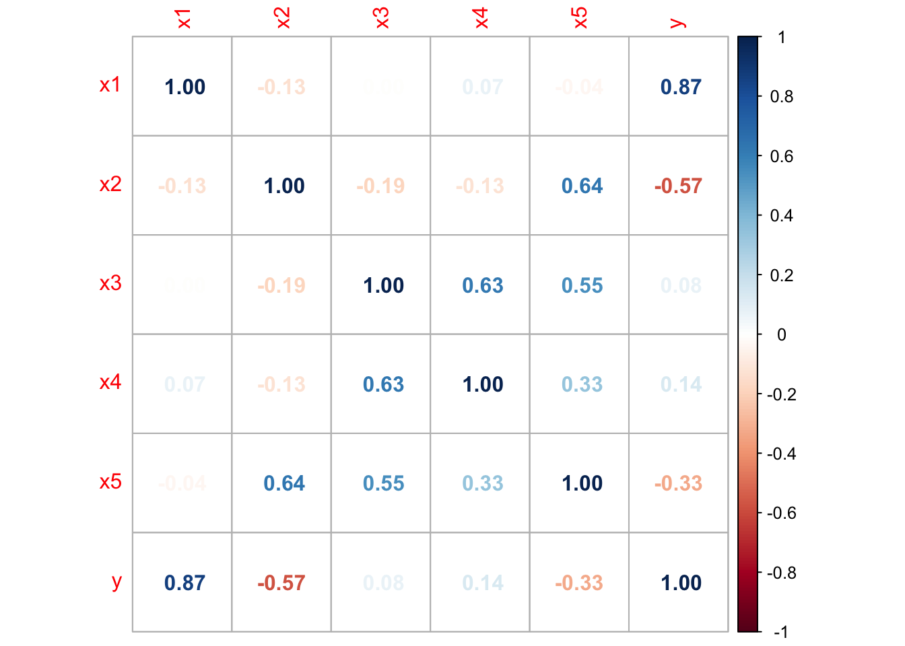

4.4 Oppgaver
4.4.1 Regresjon med en forklaringsvariabel
Oppgave 1
Forskere har brukt statistikk til å undersøke om TV-titting er forbundet med overvekt. De har samlet inn data fra 15 10-åringer om antall timer TV-titting per uke og antall kilo overvekt hos barnet (rapportert som differanse fra normalvekt). De innsamlede dataene er oppsummert i tabellen:| TV_titting | Overvekt |
|---|---|
| 42 | 17 |
| 35 | 5 |
| 28 | -1 |
| 34 | 0 |
| 37 | 13 |
| 38 | 15 |
| 32 | 5 |
| 33 | 7 |
| 18 | -7 |
| 28 | 7 |
| 36 | 6 |
| 29 | 7 |
| 29 | 4 |
| 34 | 15 |
| 18 | -5 |
Bruk R til å lage et spredningsplott av resultatene. Hva tror du om forholdet mellom de to variablene utfra figuren?
Sett opp regresjonsuttrykket for å undersøke om overvekt er forbundet med TV-titting. La overvekt være responsvariabelen. Hva er betydningen av hver parameter i uttrykket?
Bruk R til å estimere parameterne. Hva kan koeffisientene fortelle deg om forholdet mellom overvekt og TV-titting?
Beregn et 95 % konfidensintervall for \(\beta_1\). Hint: Bruk ‘summary()’ på regresjonsmodellen for å finne \(S(\hat{\beta}_1)\) som da gitt i kolonnen “Std. Error”.
Bruk R til å beregne et 95 % prediksjonsintervall for overvekt i kilo for et barn som ser på TV 30 timer i uken. Hva forteller intervallet deg?
Bruk R til å beregne et 95 % konfidensintervall for gjennomsnittlig overvekt for barn som ser 30 timer på TV i uken. Hvordan er tolkningen av dette intervallet forskjellig fra det i oppgave d?
Hva er forventet overvekt for barn som ser 0 timer på TV i uken utfra modellen? Hva kan være problematisk ved å gjøre denne type analyser av en regresjonsmodell?
Løsning
df_tv <- data.frame(
TV_titting = c(42, 35, 28, 34, 37, 38, 32, 33, 18, 28, 36, 29, 29, 34, 18),
Overvekt = c(17, 5, -1, 0, 13, 15, 5, 7, -7, 7, 6, 7, 4, 15, -5))
plot(df_tv$TV_titting, df_tv$Overvekt, type = "p", xlab="TV-titting", ylab="Overvekt")
Plottet viser en ganske tydelig trend om at TV-titting og overvekt er relaterte. Dette kan vi undersøke nærmere.
Vi setter overvekt som responsvariabel og TV-titting som forklaringsvariabel. Uttrykket blir da:
\[\begin{equation} \text{Overvekt} = \beta_0 + \beta_1 \text{TV-titting} + \epsilon \end{equation}\]
Ser vi bort fra dataene ville \(\beta_0\) være forventet overvekt for personer som ikke ser på tv. Av spredningsplottet ser det derimot ut som at vi ikke har data ved 0 TV-titting og det er derfor ikke fornuftig med en direkte tolkning av denne parameteren.
Under antagelsen om at regresjonsmodellen er gyldig forteller \(\beta_1\) hvor mye vi forventer at overvekten øker dersom man øker TV-tittingen med 1 time.
Vi estimerer en regresjonsmodell fra dataene og skriver ut tabellen med resultatene:
reg <- lm(Overvekt ~ TV_titting, df_tv)
summary(reg)##
## Call:
## lm(formula = Overvekt ~ TV_titting, data = df_tv)
##
## Residuals:
## Min 1Q Median 3Q Max
## -8.1917 -2.6147 0.2795 2.6785 6.8083
##
## Coefficients:
## Estimate Std. Error t value Pr(>|t|)
## (Intercept) -22.2124 5.1359 -4.325 0.000824 ***
## TV_titting 0.8942 0.1602 5.583 8.88e-05 ***
## ---
## Signif. codes: 0 '***' 0.001 '**' 0.01 '*' 0.05 '.' 0.1 ' ' 1
##
## Residual standard error: 4.026 on 13 degrees of freedom
## Multiple R-squared: 0.7057, Adjusted R-squared: 0.683
## F-statistic: 31.17 on 1 and 13 DF, p-value: 8.88e-05# For en finere utskrift kan du bruke følgende:
# library(stargazer)
# stargazer(reg, type="text")Det er tydelig sigifikans for at hver av parameterne er ulik null. For \(\beta_1\) betyr dette at trenden vi observerte i spredningplottet var signifikant. Videre kan vi tolke det positive fortegnet til \(\beta_1\) som at flere timer TV-titting er relatert med økt overvekt.
Merk at vi ikke kan si utfra dataene at mer TV-titting fører til overvekt. En mer riktig tolkning er å si at de forekommer samtidig i populasjonen. (Dersom vi ønsket å finne ut av kausaliteten måtte man på et tilfeldig utvalg av barn satt noen til å se mye på TV og noen til å se mindre på TV, og deretter undersøkt om dette resulterte i statistisk signifikant høyere overvekt hos en av gruppene. Dette krysser imidlertid noen etiske grenser om å påføre barn overvekt, dersom hypotesen er sann.)
Fra R utskriften ser vi at \(S(\hat{\beta}_1)=0.1602\). Videre er \(t_{0.025, 13} = 2.16\). Et 95 % konfidensintervall for \(\beta_1\) er da gitt ved:
\[\left[\hat{\beta}_1 - t_{\alpha/2, n - 2}S(\hat{\beta}_1), \hat{\beta}_1 + t_{\alpha/2, n - 2}S(\hat{\beta}_1)\right]\\ =\left[0.8942 - 2.16\times0.1602, 0.8942 + 2.16\times0.1602\right]\\ =\left[0.5481, 1.2402\right]\] e)
reg.pred <- predict(reg, newdata = data.frame(TV_titting = c(30)), interval = "predict")
reg.pred## fit lwr upr
## 1 4.614735 -4.380262 13.60973# stargazer(reg.pred, type="text")Dersom vi trekker et nytt barn som ser 30 timer på TV per uke, vil barnet i 95 % av tilfellene være innenfor prediksjonsintervallet dersom vi hadde gjentatt dette mange ganger.
reg.conf <- predict(reg, newdata = data.frame(TV_titting = c(30)), interval = "confidence")
reg.conf## fit lwr upr
## 1 4.614735 2.317582 6.911888#evt
# library(stargazer)
# stargazer(reg.conf, type="text")Konfidensintervallet viser hvor gjennomsnittet av målinger på et nytt sett med barn som ser 30 timer på TV per uke vil ligge i 95 % av nye eksperimenter.
reg.zero <- predict(reg, newdata = data.frame(TV_titting = c(0)), interval = "prediction")
reg.zero## fit lwr upr
## 1 -22.21237 -36.30997 -8.11477# evt
# library(stargazer)
# stargazer(reg.zero, type="text")Beste gjetning er at barn som ser 0 timer på TV i uken er 22.2 kg under normalvekt (!). Et kjapt søk viser at barn på 10 år veier mellom 25.5 og 39 kg. Det høres urimelig ut at veldig lite TV-titting har sammenheng med ekstrem underernæring blant den samme populasjonen av barn som ser rundt 30 timer på TV i uken.
Det er flere ting som kan gå galt når man gjør en slik analyse av en modell:
Modellen kan være gal. Vi antar et lineær forhold mellom TV-titting og overvekt, noe som ikke trenger å være riktig ved 0 timer TV-titting.
Datasettet dekker ikke den gruppen barn som ser 0 timer på TV, så med mindre modellen er helt riktig (noe den sjelden er) vil den ikke kunne generalisere så langt utenfor området vi estimerte parameterne på.
Med mindre forholdet mellom TV-titting og overvekt er kausalt, kan det være at sammenhengen som er observert mellom dem i dataene ikke vil være det samme langt utenfor det aktuelle data-området.
Oppgave 2
Vi skal undersøke om alder har sammenheng med hvor lang tid man bruker på et puslespill. Vi har data fra et tilfeldig utvalg av 210 voksne personer om alder og tid brukt på oppgaven. Uttrykk alder som \(X\) og tid i minutter som \(Y\). Følgende deskriptive statistikker er beregnet for datasettet: \(s_{xy}= 8, s_x^2, = 110, s_y^2 = 42, \bar{x} = 40, \bar{y} = 20\) hvor \(\bar{x},\bar{y}\) er gjennomsnittene.
Sett opp regresjonsuttrykket for sammenhengen mellom \(X\), \(Y\) og støy \(\epsilon\). Hva er antagelsen for sammenhengen mellom X og \(\epsilon\)?
Hva er uttrykket for beste gjetning/prediksjon \(\hat{Y}_i\) gitt en verdi av forklaringsvariabelen \(X_i\) for regresjonsmodellen du har satt opp? Hva er uttrykket for residualene?
Vis at hva uttrykket for regresjonsparameterne blir når de estimeres med minste kvadraters metode. Regn ut minste kvadraters estimat av parameterne.
Løsning
- Regresjonsuttrykket er \[\begin{equation} Y = \beta_0 + \beta_1 X + \epsilon \end{equation}\]
Vi antar at forklaringsvariabelen \(X\) er uavhenging støyen \(\epsilon\). Dermed vil også kovariansen være null, \[\begin{equation} \text{Cov}(X, \epsilon) = 0. \end{equation}\]
Beste gjetning er forvetningen betinget på utfallet av forklaringsvariabelen \(X\): \[\begin{align} \hat{Y}_i &= E[Y|X = X_i] = E[\beta_0 + \beta_1 X + \epsilon|X = X_i] \\ &= \beta_0 + \beta_1 X_i + E[\epsilon|X = X_i] \\ &= \beta_0 + \beta_1 X_i + E[\epsilon] \\ &= \beta_0 + \beta_1 X_i \end{align}\]
Residualene er forskjellen mellom data og prediksjon
\[\begin{equation} r_i = \hat{Y}_i - Y_i \end{equation}\]
Minste kvadraters metode minimerer summen av residualene kvadrert, så \[\begin{align} SSE &= \sum_{i} r_i^2 \\ &= \sum_{i} (\beta_0 + \beta_1 X_i - Y_i)^2. \end{align}\]
Minimér ved å sette den deriverte for hver parameter til null: \[\begin{align} \frac{dSSE}{d\beta_0} &= \sum_{i} 2 (\beta_0 + \beta_1 X_i - Y_i) \overset{!}{=} 0 \\ \implies \quad \beta_0 &+ \beta_1 \frac{\sum_{i} X_i}{N} = \frac{\sum_{i} Y_i}{N} \\ \implies \quad \beta_0 &= \frac{\sum_{i} Y_i}{N} - \beta_1 \frac{\sum_{i} X_i}{N}, \end{align}\] og \[\begin{align} \frac{dSSE}{d\beta_1} &= \sum_{i} 2 (\beta_0 + \beta_1 X_i - Y_i)X_i \\ &= 2 \beta_0 \sum_{i} X_i + 2 \beta_1 \sum_{i} X_i^2 - 2\sum_{i} X_i Y_i \overset{!}{=} 0 \\ &\implies \quad \beta_0 \frac{\sum_{i} X_i}{N} + \frac{\sum_{i} X_i^2}{N} = \frac{\sum_{i} X_i Y_i}{N} . \end{align}\]
Satt inn for \(\beta_0\) blir det
\[\begin{align} \left ( \frac{\sum_{i} Y_i}{N} - \beta_1 \frac{\sum_{i} X_i}{N} \right ) \frac{\sum_{i} X_i}{N} + \beta_1\frac{\sum_{i} X_i^2}{N} &= \frac{\sum_{i} X_i Y_i}{N} \\ \beta_1 \left ( \frac{\sum_{i} X_i^2}{N} - \left ( \frac{\sum_{i} X_i}{N} \right )^2 \right ) &= \frac{\sum_{i} X_i Y_i}{N} - \frac{\sum_{i} X_i}{N}\frac{\sum_{i} Y_i}{N} \\ \beta_1 S_X^2 &= S_{XY}. \end{align}\]
Da blir
beta_1 <- 8 / 110
beta_1## [1] 0.07272727og
beta_0 <- 20 - beta_1 * 40
beta_0## [1] 17.09091Oppgave 3
Figurene nedenfor viser residualene (feilleddene) vi får ut fra et par ulike modeller. Ser plottene ut til å tilfredsstille kravene for enkel regresjon? Hvis ikke, hva ser ut til å være galt for hver av figurene? Hvordan kan man håndtere brudd på betingelsene i de ulike situasjonene?


Løsning
Her ser støyleddet ut som det har konstant varians og forventing lik null. Det betyr at antagelsene er oppfylt.
Støyen er symmetrisk om null, men kan se ut som den øker. Altså er det brudd på antagelsen om konstant varians. Økningen ser ut til å være jevn, og en log-transformasjon kunne i dette tilfellet vært til hjelp.
Her ser det ut som at vi har perioder med høy varians etterfulgt av perioder med lavere varians. Vi skal ikke se så mye nærmere på hvordan dette kan håndteres i MET4, men man kan komme over det i senere kurs.
Her ser det ut som at støyen har en relasjon i tid, og at høye/lave verdier henger sammen med høye/laver verdier. Det er ikke åpenbart at det er dette som foregår, og vi burde undersøkt det nærmere. Senere i kurset skal vi håndtere dette ved bruk av tidsrekkemodeller.
Merk at det ikke alltid er lett å se direkte fra figurene hva som er galt. Riktig bruk av statistiske tester og diagnoseplott kan hjelpe med å oppdage brudd på betingelsene. Figurene i denne oppgaven er generert ved simulering, vi kan derfor vite akkurat hva som er galt. For virkelige data vil kunne være vanskeligere å tolke fordi det ikke nødvendigvis er én ting som er galt om gangen. Man må også være på vakt for overtolkning av det som egentlig er tilfeldigheter.
4.4.2 Multippel regresjon og modellbygging
Oppgave 1
Denne oppgaven skal gi et forhold til hvordan teorien funker i praksis. Vi skal simulere data fra konstruerte modeller gjøre analyser på dem. Fordelen med å begynne her er at man får er forhold til hvordan statistikk kan og bør tolkes utfra teorien. Med virkelige data vil antagelsene som ligger til grunn for modellene stort sett være brutt, i større eller mindre grad, og kjernen i god statistisk analyse er å vite hva man kan og ikke kan gjøre likevel. God kjennskap til hvordan det burde funke i teorien er en viktig byggestein for statistisk forståelse.
Vi generer opp data som skal brukes til å estimere en model. rnorm trekker tall fra en standard normalfordeling. mutate() legger til nye kolonner i dataframe-en basert på allerede eksisterende kolonner. set.seed() setter startpunktet for pseudotilfeldige tall, og om du setter samme seed får du de samme tilfeldige tallene som vi har brukt.
library(tidyverse)
set.seed(4)
df_mdl <- data.frame(
x1 = rnorm(100, sd = 2),
x2 = rnorm(100, sd = 2),
eps = rnorm(100)
) %>% mutate(
y = 2 * x1 + (-1) * x2 + eps
)Hva er de eksakte parameterne i modellen som passer til dataene vi har generert, og hva er fordelingen til hver av forklaringsvariablene og støy-leddet? Er betingelsen om uavhengig feilledd oppfylt?
Generér opp dataene selv og estimer parameterne basert på dataene. Tolk estimatene.
Lag 95 % konfidens- og prediksjonsintervaller for en prediksjon hvor \(X_1=1, X_2=1\) basert på estimatene dine.
Hva er eksakt prediksjonsintervall basert på modellen vi har generert data fra? Ser dine prediksjonsintervaller rimelige ut utfra dette? Hvorfor er de ikke eksakt like?
Stemmer konfidensintervallet overens med modellen? Tolk konfidensintervallet basert på at vi kan generere opp nye data (med et annet seed).
Hva er P-verdien i F-test for at vi har en signifikant sammenheng mellom responsvariabelen og forklaringsvariablene?
Løsning
Fordelingen til forklaringsvariablene er \[\begin{align} X_1, X_2 \sim N(0, 2) \end{align}\] fordi vi har trukket dem fra en normalfordeling med forventning 0 og standardavvik 2. Videre er fordelingen til støyleddet en standard normalfordeling \(\epsilon\sim N(0,1)\). Betingelsen om uavhengig feilledd er oppfylt siden vi ikke har brukt feilleddet til å generere forklaringsvariablene. Det er responsvariabelen, men den skal altså være avhengig av støyleddet. Modellen tar formen \[\begin{align} Y = 2 X_1 - X_2 + \epsilon,\quad \epsilon \sim N(0, 1), \end{align}\] hvor parameterne er eksakt fordi vi har laget dataene selv.
reg <- lm(y ~ x1 + x2, data = df_mdl) stargazer(reg, type = "text")## ## =============================================== ## Dependent variable: ## --------------------------- ## y ## ----------------------------------------------- ## x1 1.986*** ## (0.053) ## ## x2 -1.091*** ## (0.048) ## ## Constant -0.055 ## (0.096) ## ## ----------------------------------------------- ## Observations 100 ## R2 0.958 ## Adjusted R2 0.957 ## Residual Std. Error 0.956 (df = 97) ## F Statistic 1,094.997*** (df = 2; 97) ## =============================================== ## Note: *p<0.1; **p<0.05; ***p<0.01Vi ser at estimatene av koeffisientene er signifikante, og at sanne verdier er innenfor konfidensintervallet for hver av dem. Det er ikke et konstantledd i modellen vår, noe som stemmer overens med at den ikke er signifikant forskjellig fra null i regresjonsmodellen.
new_df <- data.frame(x1 = 1, x2 = 1) reg_pred <- predict(reg, newdata = new_df, interval = "predict") reg_conf <- predict(reg, newdata = new_df, interval = "confidence")## ## Prediksjonsintervall ## ==================== ## fit lwr upr ## -------------------- ## 1 0.840 -1.073 2.752 ## --------------------## ## Konfidensintervall ## =================== ## fit lwr upr ## ------------------- ## 1 0.840 0.600 1.080 ## -------------------
Eksakt prediksjonsintervall for modellen som genererte dataene er \[\begin{align} \bar{Y}|X_1,X_2 \pm \alpha_{0.025} \sigma_{\epsilon} &= 2 \cdot 1 - 1 \cdot 1 \pm 1.96 \cdot 1 \\ &= 1 \pm 1.96 \\ &= [-0.96, 2.96]. \end{align}\] Estimert prediksjonsintervall er bredere enn det estimerte intervallet. Dette kommer av usikkerhet knyttet til estimatene av forventning og standardfeil. Det er benyttet T-test i estimatet av prediksjonsintervallet for å ta hensyn til denne usikkerheten. Man burde ikke få smalere prediksjonsintervaller enn det som faktisk er “sant” med mindre noen av modellantagelsene er usann. Merk at når vi generer opp data selv vet vi sannheten, det gjør vi ikke for virkelige data.
Vi burde få at \(\bar{Y}|X_1,X_2 = 1\) er innenfor konfidensintervallet, noe ser ut til å være oppfylt. Tolkningen er at dersom vi kjører analysen på mange ulike datasett vil \(\bar{Y}|X_1,X_2 = 1\) havne innenfor konfidensintervallet i 95 % av tilfellene. Dette kan du prøve selv, bare pass på at du ikke setter seed-et før du generer opp et nytt datasett.
Svaret gis i regresjonstabellen
stargazer(reg, type = "text")## ## =============================================== ## Dependent variable: ## --------------------------- ## y ## ----------------------------------------------- ## x1 1.986*** ## (0.053) ## ## x2 -1.091*** ## (0.048) ## ## Constant -0.055 ## (0.096) ## ## ----------------------------------------------- ## Observations 100 ## R2 0.958 ## Adjusted R2 0.957 ## Residual Std. Error 0.956 (df = 97) ## F Statistic 1,094.997*** (df = 2; 97) ## =============================================== ## Note: *p<0.1; **p<0.05; ***p<0.01F-statistikken er angitt som \(1094.997\) med frihetsgrader \(2, 97\). P-verdien regnes som
pf(1094.997, 2, 97, lower.tail = FALSE)som er veldig liten. Altså bekrefter analysen at det er sammenheng mellom forklaringsvariablene og responsvariabelen. Hva ville du tenkt var galt om vi ikke fikk denne konklusjonen fra F-testen, gitt den modellen vi har brukt til å generere dataene? Hint: Det er faktisk en reell sammenheng her.## [1] 2.716911e-67
4.4.2.1 Oppgave 2
Denne oppgaven følger samme premiss som oppgave 1, men handler om kolinearitet. Last ned datasettene 1 og 2, hvor y er responsvariabel og forklaringsvariable er navngitt x.
Finn kolinearitet
Hva må man passe dersom man skal lage en regresjonsmodell for responsen Y?
Løsning
Vi kan begynne med å plotte forholdet mellom de ulike variablene:
pairs(y ~ ., data = df_colin1)
corrplot(cor(df_colin1), method = "number")
Her ser det ut som vi har et forhold mellom \((X_2, X_3)\). Videre ser det ut som at alle tre forklaringsvariable har en sammenheng med responsvariablen \(Y\).
reg_colin1 <- lm(y ~ ., data = df_colin1) stargazer(reg_colin1, type = "text")## ## =============================================== ## Dependent variable: ## --------------------------- ## y ## ----------------------------------------------- ## x1 1.348*** ## (0.053) ## ## x2 -0.695*** ## (0.064) ## ## x3 -0.208** ## (0.102) ## ## Constant -0.095 ## (0.097) ## ## ----------------------------------------------- ## Observations 100 ## R2 0.916 ## Adjusted R2 0.913 ## Residual Std. Error 0.960 (df = 96) ## F Statistic 346.946*** (df = 3; 96) ## =============================================== ## Note: *p<0.1; **p<0.05; ***p<0.01\(X_1\) og \(X_2\) kommer ut som signifikante, og \(X_3\) ved lavere signifikansnivå.
Vi kan sjekke variance inflation factor (VIF)
vif(reg_colin1)## x1 x2 x3 ## 1.018945 1.785963 1.774712som oppgir at estimeringen i seg selv ikke burde være noe problem.
Kommentarer:
Det reelle forholdet mellom variablene i dette eksempelet er \[\begin{align} X_1 &\sim N(0, 2) \\ X_2 &\sim N(0, 2) \\ X_3 &= 0.5 X_2 + \epsilon_3 \quad \epsilon_3 \sim N(0,1) \\ Y &= 1.3 X_1 - 0.8 X_2 + \epsilon, \quad \epsilon \sim N(0,1), \end{align}\] og vi kan tenke oss at dette representerer det kausale forholdet mellom variablene. Siden vi har generert dataene kan vi si det.
Det er videre interessant å merke seg i dette eksempelet at \(X_3\) kommer ut med en signifikant koeffisient selv om den rent kausalt ikke har noen sammenheng med \(Y\). \(X_3\) er kun relatert til \(X_2\).
Dersom man ønsker å gjøre prediksjon kan det være forklaringskraft i \(X_3\) for å gjøre prediksjon av \(Y\), men i så tilfelle antas det at forholdet mellom \((X_2, X_3)\) også vedvarer i fremtiden. Dersom man skal gjøre inferens om en tenkt kausal sammenheng er det mulig å gå på en blemme i et tilfelle som dette.
Hvis man ønsker å forklare noe og det er sammenheng mellom to forklaringsvariable kan det fra økonomisk prespektiv være interessant å spørre seg om man bryr seg om \(X_3\) i det hele tatt og skal ta den ut. Kanksje \(X_3\) er vanskelig å samle inn data om eller den åpenbart ikke har sammenheng med Y. Om den åpenbart ikke skal ha sammenheng med \(Y\) kan støyleddet \(\epsilon_3\) også skape unødig støy i prediksjonene.
Plott forholdet mellom de ulike variablene:
pairs(y ~ ., data = df_colin2)corrplot(cor(df_colin2), method = "number")
Her ser vi et tydelig forhold mellom parene \((X_3, X_4)\), \((X_4, X_5)\), \((X_3, X_5)\) og \((X_2, X_5)\). Ellers ser det kun ut som det er et tydelig forhold mellom \(Y\) og \(X_1, X_2\). Med så mange forhold kan det være snakk om multikolinearitet, som ikke er så lett å se utfra 2D-plott.
reg_colin2 <- lm(y ~ ., data = df_colin2) stargazer(reg_colin2, type = "text")## ## =============================================== ## Dependent variable: ## --------------------------- ## y ## ----------------------------------------------- ## x1 2.049*** ## (0.053) ## ## x2 -1.179*** ## (0.111) ## ## x3 -0.198* ## (0.114) ## ## x4 0.101** ## (0.050) ## ## x5 0.092 ## (0.097) ## ## Constant -0.018 ## (0.095) ## ## ----------------------------------------------- ## Observations 100 ## R2 0.963 ## Adjusted R2 0.961 ## Residual Std. Error 0.932 (df = 94) ## F Statistic 486.175*** (df = 5; 94) ## =============================================== ## Note: *p<0.1; **p<0.05; ***p<0.01Vi ser på VIF for om det kan være problemer med estimering grunnet kolinearitet
stargazer(vif(reg_colin2), type = "text", title = "VIF")## ## VIF ## ============================= ## x1 x2 x3 x4 x5 ## ----------------------------- ## 1.062 5.731 5.517 1.662 7.769 ## -----------------------------hvor vi ser at \(X_5\) nærmer seg problematisk område for å få en overdreven varians i estimatene.
Dersom målet er å estimere sammenheng mellom alle forklaringsvariable og \(Y\) vil dette kunne gå gjennom siden VIF ikke er altfor høy. Hvis det derimot er snakk om modellbygging bør man tenke gjennom om noen av variablene ikke er så viktige og bør tas ut.
Kommentarer:
Det reelle forholdet mellom variablene i dette eksempelet er \[\begin{align} X_1 &\sim N(0, 2) \\ X_2 &\sim N(0, 2) \\ X_3 &\sim N(0, 2) \\ X_4 &= X_3 + \epsilon_4, \quad \epsilon_4 \sim N(0,2) \\ X_5 &= X_2 + X_3 + \epsilon_5, \quad \epsilon_5 \sim N(0,1) \\ Y &= 2 X_1 - X_2 + \epsilon, \quad \epsilon \sim N(0,1) \end{align}\]
Her kan vi igjen merke oss at variablene \(X_3, X_4, X_5\) kommer inn i regresjonsmodellen med noen koeffisienter som er svakt signifikante. I dette tilfellet trenger ikke dette ha så mye å si. Likevel, ettersom det ikke er noen direkte sammenheng mellom \(X_3, X_4, X_5\) ville det vært ideelt å ikke ha dem med i regresjonsmodellen for å unngå feilestimering av koeffisientene til \(X_1\) og \(X_2\). Fra anvendt statistikk perspektiv bør man tenke gjennom om det gir mening at \(X_3, X_4, X_5\) forklarer \(Y\).